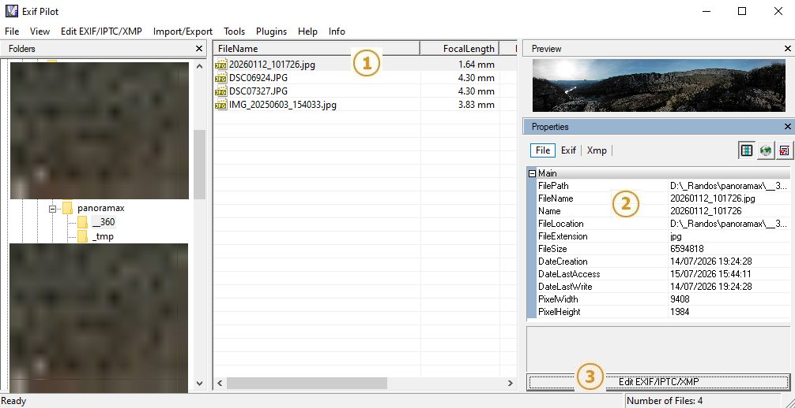
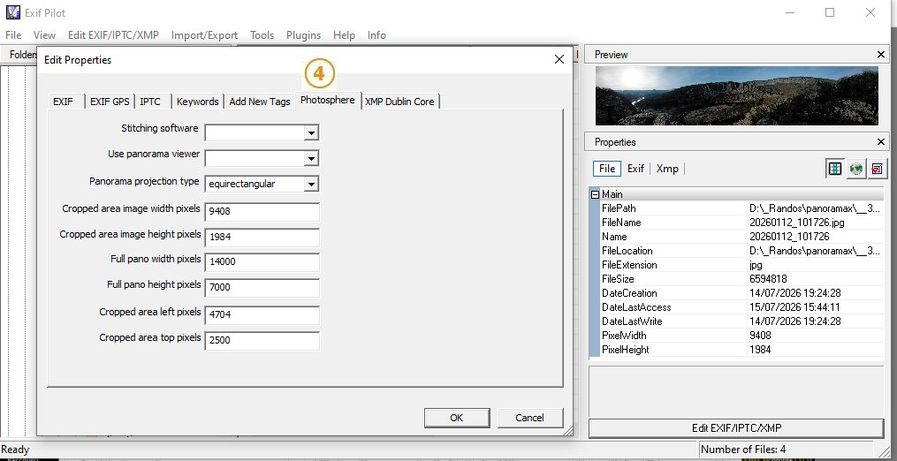
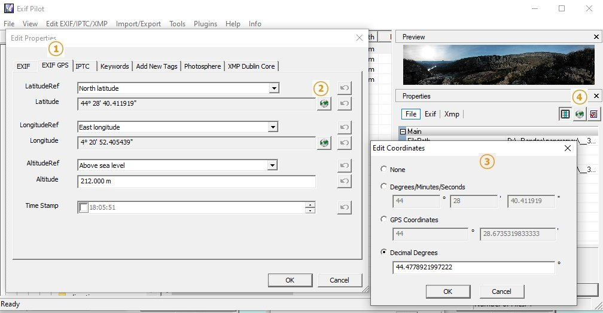
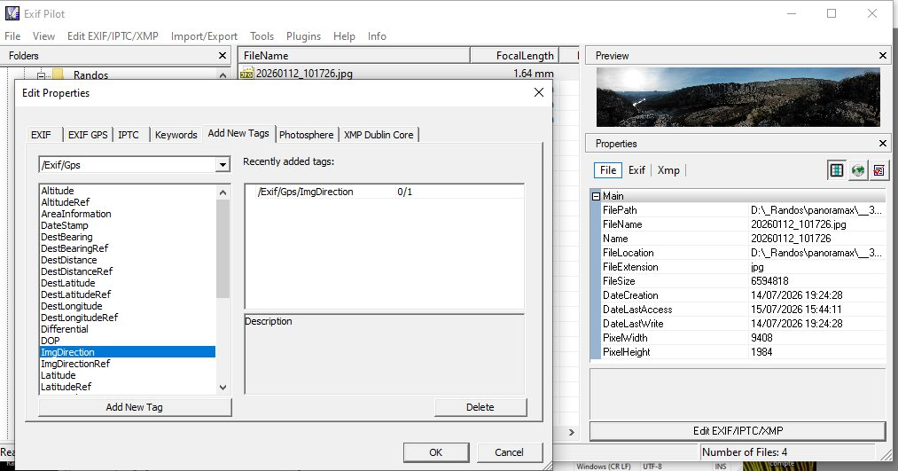

10/07/2026
Toujours dans l'optique de photographier les sentiers sans matériel spécial et sans connaissances poussées en informatique pour espérer augmenter le nombre de contributions sur Panoramax, après l'utilisation de baba pour les prises de vues et une proposition de visualisation mieux adaptée aux séquences irrégulières et aux photos isolées, voici maintenant une méthode simple pour ajouter des prises de vues panoramiques prises avec un simple téléphone.
Les deux seuls outils supplémentaires à utiliser sont la page web du playground de Photo Sphere Viewer pour voir un aperçu de ce que la photo donnera dans Panoramax et une mini appli windows, Exif Pilot, pour écrire et modifier les données exif dans l'image.
Exif Pilot est un tout petit programme Windows ( < 5 Mb ) qui permet de voir et d'éditer toutes les métadonnées d'un fichier image.
Je ne sais pas s'il existe un équivalent Linux ou Mac mais une fois qu'on a compris les bases, d'autres éditeurs Exifs peuvent faire le travail.
La page Playground de Photo Sphere Viewer est une simple page web dans laquelle on peut charger une photo quelconque pour voir le résultat en visualisation 3D. C'est une aide très utile pour voir l'effet des modifications effectuées dans Exif Pilot.
On pourrait même en principe modifier en temps réel les données dans Pano data/Provide manual data mais si on essaie de rentrer à la main une largeur de panneau, au premier chiffre tapé on entre dans une boucle infinie ou très longue car la page essaie de traiter un panneau de 1, 2, 3... pixels (le premier chiffre tapé) et n'y arrive pas.
Selon le logiciel de l'appareil, un panorama complet couvre un peu plus de 360° ou un angle plus faible. Quelques essais préliminaires permettront de préciser ce point.
Pour les panoramas incomplets, une solution pour calibrer l'angle est de prendre un panorama avec des sommets connus. En repérant leur distance en pixels sur la photo et les azimuths de ces sommets, sur cartes.gouv.fr par exemple (afficher plus/mesurer un angle ), on aura un étalonnage en pixels par degré et donc l'anle complet couvert par le panorama.
Dans tous les cas, il faut se souvenir que la photo s'ouvrira par défaut sur le point central du panorama et donc effectuer un balayage de part et d'autre de cette direction.
Pour les panoramas 360°, le raccord 360° - 0° n'est jamais parfait même si le balayage est bien horizontal et la photo coupée au bon endroit. On peut se débrouiller pour placer ce raccord dans une zone moins intéressante.

Dans Exif Pilot, lorsqu'on sélectionne une photo (1), toutes les métadonnées sont affichées dans le panneau de droite (2). Les données du panorama sont dans le volet XMP sous la rubrique GooglePhotoSpere. Selon l'appareil de prise de vue, cette rubrique peut être déjà présente et remplie ou complètement absente.
Pour la remplir ou la modifier il faut ouvrir l'éditeur par le bouton en bas du panneau (3) et sélectionner l'onglet Photosphere (4).

Le panorama pris en tournant sur place devrait normalement se projeter sur un cylindre mais Panoramax n'accepte que la projection sphérique. Il faut donc commencer par choisir cette projection - (projection type: equirectangular).
Dans cette projection, l'image (CroppedArea) est plaquée sur une sphère (FullPano) de 360° en horizontal et 180° en vertical. Les six paramètres numériques sont :
Pour modifier la localisation, ou pour insérer des coordonnées pour les fichiers qui n'en ont pas, il faut aller dans l'onglet Exif Gps de l'éditeur (1).
Pour chaque coordonnée, un clic sur l'icône monde (2) donne accès à l'éditeur de la ligne (3) avec le choix du format d'entrée (degrés/minutes/secondes ou degrés décimaux) Exif Pilot fait automatiquement la conversion dans le bon format exif.

Exif Pilot donne un moyen simple de vérifier cette localisation. En cliquant sur l'icône monde en dessous de la vignette (4), une fenêtre web s'ouvre avec le point localisé sur la photo satellite de Google Maps.
En comparant la photo à des repères sur la carte, on peut facilement estimer l'azimuth correspondant au centre de l'image. Cet azimuth sera la direction indiquée par Panoramax à l'ouverture de la photo.

Pour insérer cette valeur dans l'éditeur, il faut aller dans l'onglet Add New Tags, retrouver dans la catégorie Exif/Gps la clef Exif/Gps/ImgDirection et rentrer la valeur en degrés sans se préoccuper de la présentation sous forme de fraction, on ne va pas chercher le dixième de degré.
Une fois les réglages terminés, on peut envoyer directement la photo au moyen de l'interface web de Panoramax. L'inconvénient est que, s'il s'agit d'une photo isolée, elle sera difficile à retrouver, les photos hors séquences n'apparaissent que comme des petits points peu visibles et seulement à partir du zoom 16.
La photo peut avoir été prise au cours de l'enregistrement d'une séquence avec baba. Baba n'a pas de possibilité de panorama pour l'instant mais on peut très bien, en parallèle, utiliser l'appareil photo de base.
Dans ce cas, après avoir récupéré la photo sur l'ordinateur et édité les paramètres, il faut renvoyer la photo dans un répertoire quelconque du téléphone puis, en rouvrant la séquence avec baba, aller chercher cette photo et la charger dans la séquence. Avec l'horodatage l'ordre chronologique sera respecté.
Attention, il faut faire tout ça avant d'envoyer la séquence.Une fois stockée sur Panoramax on ne peut plus la modifier.